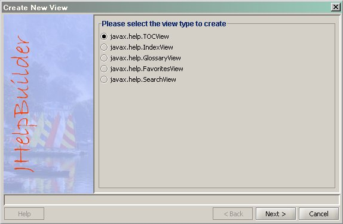
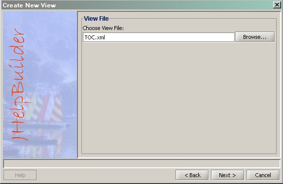
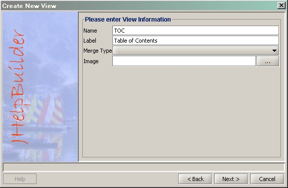
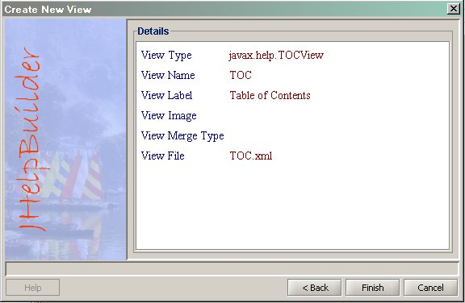
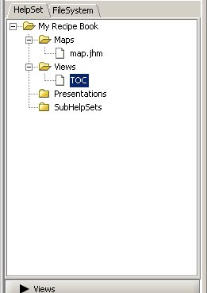
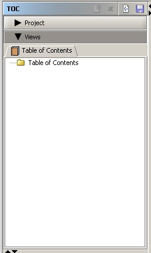

Now we will add Table of Contents to our project.
To add , we go to the HelpSet tab.
- Go to the HelpSet tab.
- Click the
 button in the toolbar, and select the "New View" item.
button in the toolbar, and select the "New View" item. - A View Creation Wizard will popup. Choose javax.help.TOCView on the 1st screen.
- 
- Click on Next.
- Enter a file name for your "Table of Contents" file. You can also use the "Browse" button to select a file.[TOC.xml]
- 
- Click on Next.
- In this screen, enter the view Name, and Label.[TOC, Table of Contents]
- 
- The information you entered is displayed. You can go back and change any value. Click "Finish" to create the Table of Contents.
- 
- The Table of Contents are now displayed in the HelpSet tab and Views tab.
- 
- 